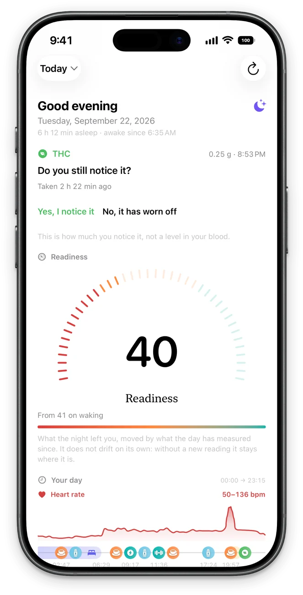
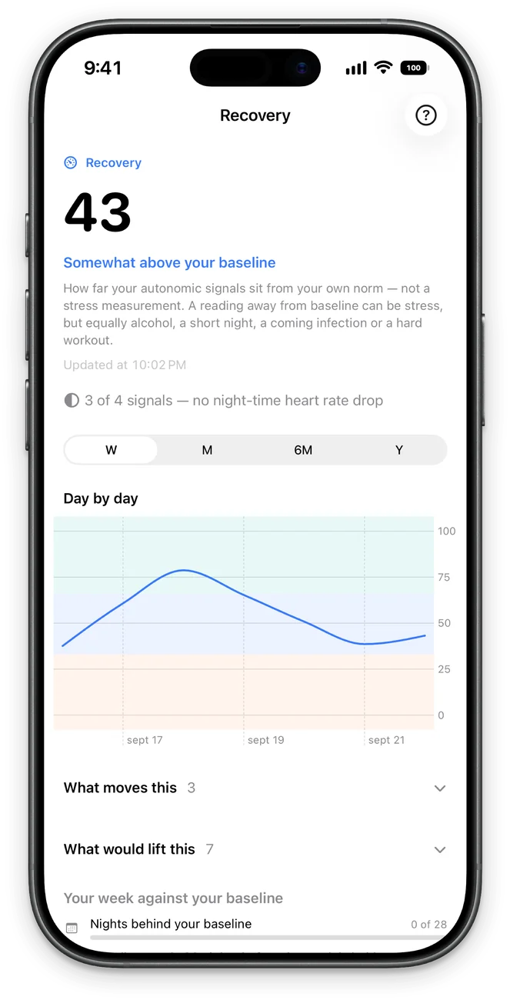
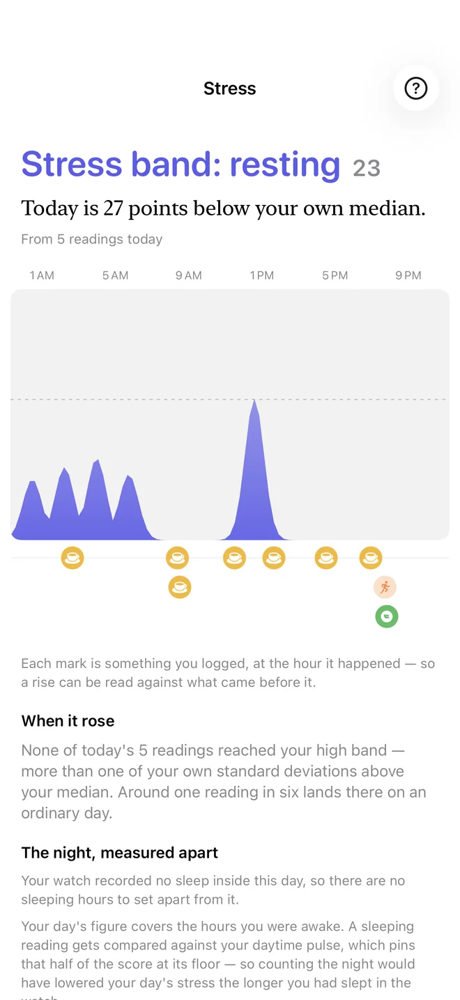
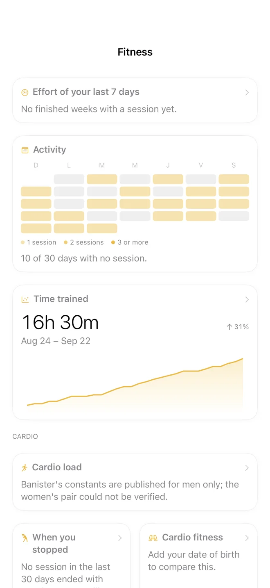
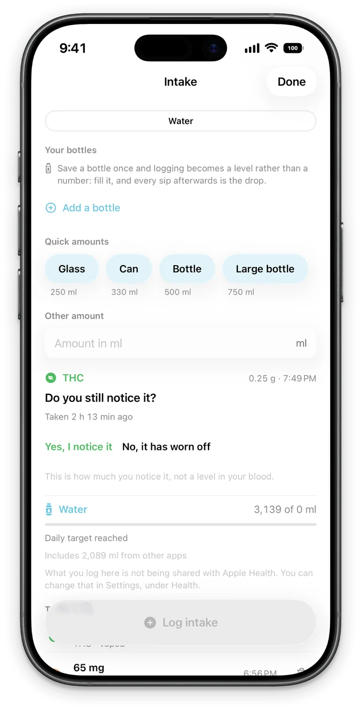
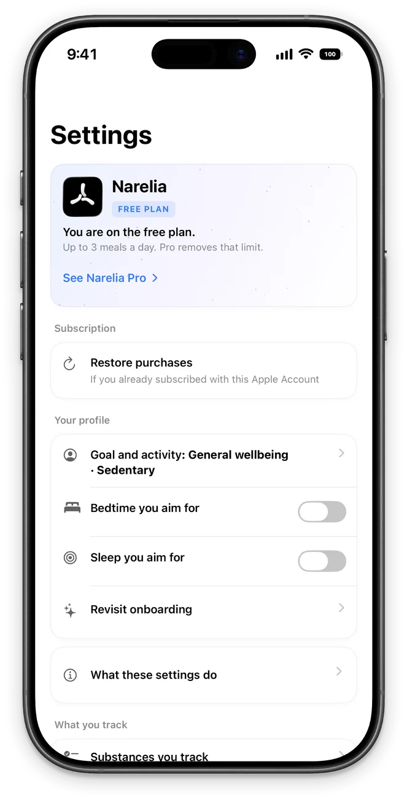

Your data, measured against you.
Narelia reads your Apple Watch and compares you with yourself: your nights, your weeks, your usual range. Not with a population chart, and never claiming more than it knows.
Free during the beta. No account. iPhone with iOS 26; Apple Watch recommended.

Every number shows the arithmetic behind it.
No black-box scores. Every screen shows what its figure is made of and which of your days it is compared with.
-
Your numbers against your own history
-
Every number shows the arithmetic behind it

-
What your watch measures while you sleep

-
Your effort against your own weeks

-
Water, caffeine, creatine, protein and meals

-
No account, no server

Principles
Data, not verdicts
It writes “47 minutes less than your median”, not “your recovery is bad”. The app does the arithmetic; the interpretation is yours.
Honest while it learns
A baseline needs history. While yours forms, the screen counts the nights it has and the nights it needs, instead of showing a figure that doesn’t mean anything yet.
Your days, side by side
Log water, caffeine, THC or creatine and it lines up your days with and without them. When it finds a difference, it shows you both groups of days and how much of it could be chance.
It knows its limits
A quiet screen is not proof that nothing is there. When the data can’t support a conclusion, Narelia says so, with the number, instead of filling the gap.
Beyond the app.
Readiness, heart rate hour by hour, stress, sleep, vitals, water and activity, on your Home Screen, Lock Screen and Apple Watch. Four styles to choose from: Narelia, Night, Editorial and Classic.


No account. No server.
All analysis happens on your iPhone. Your meal photos are read by Apple’s on-device model, on the phone itself; they are not uploaded anywhere.
Your data lives on your iPhone and in the Health app. The iCloud copy is optional, goes to your own account, and stays off until you turn it on.
No analytics and no advertising identifiers. The person who makes the app has no copy of anything of yours.
Discover it with your own data.
Join the beta on TestFlightIt installs through Apple’s TestFlight app. Baselines start forming with your first nights wearing the watch.